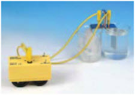

| Objetivo: |
Transformar energía calorífica en energía eléctrica. |
| Material |
|
|
| Introducción: |
|
La generación de energía eléctrica, en términos generales, consiste en transformar alguna clase de energía no eléctrica, sea esta
química, mecánica, térmica, luminosa, etc., en energía eléctrica. |
| Desarrollo Experimental: |
|
Experimento 1:
|
| Resultados y Conclusiones: |
|
1) En que principio se basa el experimento. |
| Experimento 1 |
|  |